Tôi không biết hắn từ đâu đến, nhưng biết hắn sẽ đi đâu: hắn nhập địa ngục.
A. Dumas, BÁ TƯỚC MONTE CRISTO.
Corso về đến nhà thì trời đã tối đen. Bàn tay sưng phù nhét trong túi áo khoác run lên nhức nhối, gã bước về phía phòng tắm, nhặt chiếc khăn tắm và bộ quần áo ngủ nhàu nát dưới sàn nhà lên rồi giữ bàn tay dưới vòi nước lạnh trong năm phút. Rồi gã đứng nguyên trong bếp mở mấy lon đồ hộp ra ăn.
Thật là một ngày kỳ lạ và nguy hiểm. Khi nghĩ về nó, gã thấy bối rối, mặc dù tò mò nhiều hơn là lo lắng. Từng có dạo gã ứng xử với sự bất ngờ giống như một người theo thuyết định mệnh, chờ cho sự đời tung ra bước tiếp theo. Từ trước tới giờ, thói quen thờ ơ lãnh đạm khiến gã chưa bao giờ đích thân động thủ. Trước cái buổi sáng trên con phố nhỏ ở Toledo, vai trò của gã chỉ đơn thuần là thực hiện mệnh lệnh. Kẻ khác là nạn nhân. Gã bao giờ cũng khách quan khi lừa gạt hay giao dịch với người khác. Gã không xác lập quan hệ với những cá nhân hay sự thật có dính líu – chúng chỉ đơn giản là công cụ làm ăn. Gã đặt mình ra ngoài, trong vai trò người làm thuê chỉ biết đến lợi nhuận. Người thứ ba vô cảm. Có lẽ thái độ này khiến gã thường xuyên cảm thấy an toàn, giống như khi gã bỏ kính ra, người và vật trở nên lờ mờ không rõ; gã có thể lờ chúng đi bằng cách loại bỏ đường viền sắc nét của chúng. Song hiện giờ cái đau từ bàn tay bị thương, cảm giác về mối nguy hiểm gần kề, về hành vi hung bạo nhắm trực tiếp và duy nhất vào chính gã, đã dẫn tới những thay đổi đáng sợ trong thế giới của gã. Lucas Corso, đã bao lần bức hiếp người khác, không quen đóng vai nạn nhân. Nên lần này gã thấy hết sức luống cuống.
Ngoài chỗ tay đau, gã còn cảm thấy các bắp cơ căng cứng và miệng thì khô khốc. Corso mở một chai Bols rồi lần tìm aspirin trong các túi vải. Gã luôn dự trữ đầy đủ aspirin, cùng với sách, bút chì, bút mực, cuốn sổ đã ghi kín nửa, con dao quân dụng Thụy Sĩ, hộ chiếu, tiền mặt, quyển sổ địa chỉ căng phồng, sách của gã và của người khác. Bất cứ lúc nào gã cũng có thể dấu mình giống như con ốc sên co mình vào vỏ. Với cái túi đó gã có thể hoàn toàn thoải mái ở bất cứ nơi nào mà sự may rủi hay khách hàng đưa gã tới – sân bay, ga xe lửa, những thư viện bụi bặm ở châu Âu, những buồng khách sạn mà tất cả hòa vào nhau trong ký ức gã thành một căn buồng duy nhất có kích cỡ thay đổi, nơi gã thường giật mình thức dậy, khật khưỡng lần mò trong bóng tối tìm công tắc đèn, chỉ để rồi đụng phải cái điện thoại. Những khoảnh khắc trống rỗng cứ thế bị rứt ra khỏi cuộc đời bà ý thức gã. Gã không khi nào quá chắc chắn về bản thân hoặc bất cứ cái gì, bởi trong ba giây đầu tiên sau khi mở mắt, thân thể gã thức tỉnh trước cả đầu óc lẫn trí nhớ.
Corso ngồi vào máy tính, đặt cuốn sổ ghi chép cùng mấy cuốn sách tham khảo lên bàn, bên trái. Bên phải là Chín cánh cửa và tập tư liệu của Varo Borja. Thế rồi gã lặng lẽ ngả người trên chiếc ghế trong năm phút, mặc cho điếu thuốc cháy hết trên tay, chỉ một hai lần đưa lên môi. Gã chỉ làm mỗi một việc là uống nốt chỗ rượu gin rồi nhìn chằm chằm vào màn hình máy tính trống rỗng và biểu tượng trên bìa sách. Cuối cùng gã tuồng như sực tỉnh. Gã dụi điếu thuốc vào gạt tàn, chỉnh lại kính, bắt tay vào làm việc. Tư liệu của Varo Borja khớp với Bách khoa toàn thư về các nhà in và những cuốn sách hiếm và lạ của nhà Crozet:
TORCHIA, Aristide (1620-1667). Nhà in, nhà khắc tranh và nhà đóng sách ở Venice. Dấu nhà in: một con rắn và một cái cây bị sét đánh. Học việc ở Leyden (Hà Lan) trong xưởng của hang Elzevir. Khi trở lại Venice ông đã hoàn thành một loạt tác phẩm về đề tài triết học và thần bó khổ nhỏ (12 mo, 16 mo[1]) được đánh giá cao. Đáng chú ý trong đó là Những bí mật về sự thông thái của Nicholas Tamisso (ba tập, 12 mo, Venice 1650), Chìa khóa của tư duy chuyên chú (một tập, 132x75 mm, Venice 1653), Bộ ba sách về nghệ thuật của Paolo d’Este (sáu tập, 8 vo, Venice1658), Lý giải về những điều huyền bí và những biểu tượng (một tập, 8vo, Venice 1659), in lại từ cuốn Từ thất lạc của Bernardo Trevisano (một tập. 8 vo, Venic 1661) và Sách về chín cánh cửa của vương quốc bóng tối (một tập, folio, Venice 1666). Vì in cuốn sách sau cùng, ông rơi vào tay Tòa án Dị giáo. Xưởng in bị hủy cùng mọi văn bản đã in và chưa in có ở đó. Torchia bị kết tội liên quan đến ma thuật cùng phép phù thủy và kêu án tử hình. Bị thiêu sống ngày 17 tháng Hai năm 1667.
Corso rời mắt khỏi màn hình máy tính rồi xem kỹ trang đầu cuốn sách đáng giá mạng sống của chủ nhà in Venice. Đầu đề là DE UMBRARUM REGNI NOVEM PORTIS. Bên dưới là dấu nhà in, một hình vẽ thay cho chữ ký của nhà in, có thể là bất cứ cái gì từ một chữ lồng cho tới một bức họa tỉ mỉ. Trong trường hợp Torchia, như trong cuốn sách của Crozet đã nói, dấu này là một cái cây có một cành cây bị sét đánh gãy và con rắn cuộn tròn quanh thân cây, nuốt trộng cái đuôi của chính mình. Đi kèm với bức vẽ là câu châm ngôn SIC LUCEAT LUX: Thần quang xán lạn dường này. Ở bên dưới trang sách là địa điểm, tên và ngày tháng: Venetiae, apud Aristidem Torchiam. In ở Venice, tại xưởng của Aristidem Torchiam. Dưới nữa, cách ra bởi dòng trang trí: MDCLXVI Cum superiorum privilegio veniaque. Nhờ đặc quyền và sự cho phép của các đấng bề trên.
Corso gõ vào máy tính:
Cuốn sách không dán nhãn sở hữu hay có ghi chú viết tay. Hoàn toàn giống trong catalô dùng cho buổi đấu giá bộ sưu tập Terral-Coy (Claymore, Madrid). Lỗi trong Mateu (công bố 8 chứ không phải 9 bức tranh khắc như trong bản này). Khổ Folio. 299x215 mm. 2 tờ trắng, 160 trang và 9 tranh toàn trang, đánh số I đến VIIII. Các trang: một trang nhan đề có dấu nhà in. 157 trang chữ. Trang cuối trống, không lời ghi cuối sách. Bản khắc toàn trang theo khổ recto. Trang bìa sau trống.
Gã lần lượt xem từng bức họa. Theo Borja, truyền thuyết nói rằng các bức vẽ gốc là do chính tay Lucifer vẽ. Mỗi bức đều có kèm số thứ tự kiểu La Mã, các ký tự Hy Lạp và Do Thái tương đương, cùng một câu tiếng Latinh dưới dạng mã rút gọn. Gã gõ vào máy:
I. NEM. PERV.T.QUI N.N LEG. CERT.RIT: Một kỵ sĩ đi về phía một tòa thành có tường bao. Anh ta đặt một ngón tay lên môi, ra dấu thận trọng hay im lặng.
II. CLAUS. PAT.T: Một ẩn sĩ đứng trước cánh cửa khóa, tay cầm hai cái chìa khóa. Một cái đèn lồng nằm dưới đất. Một con chó đi theo ông ta. Đằng sau ông ta có một ký hiệu giống như chữ cái Teth trong tiếng Do Thái cổ.
III. VERB. D.SUM C.S.T. ARCAN.: Một kẻ lang thang hoặc một người hành hương đi về phía cây cầu bắc ngang sông. Tháp canh ở hai đầu cầu đều đóng kín. Một người mang cung tên trong tay nấp trên mây nhắm vào con đường dẫn tới cây cầu.
IIII. (Chữ số La Mã viết dưới dạng này chứ không phải dạng thông thường IV). FOR. N.N OMN. A.QUE: Một anh hề đứng trước một mê cung bằng đá. Lối nào cũng đóng kín. Ba con xúc xắc trên mặt đất lộ ra ba mặt số 1, 2 và 3.
V. FR.ST.A: Một gã keo kiệt, hay một lái buôn, đang đếm tiền vàng trong bao tải. Sau lưng gã, Thần Chết một tay cầm đồng hồ cát, một tay nắm cái chĩa ba.
VI. DIT.SCO M.R: Một người làm nghề treo cổ phạm nhân trông giống như trong con bài Ta rô, tay bị trói quặt ra sau, bị treo ngược chân lên mặt tường thành, gần một cửa hậu đóng kín. Một cánh tay mang găng sắt cầm một thanh gươm bốc cháy thò ra từ một cửa sổ hẹp.
VII. DIS.S P.TI.R MAG: Một ông vua và một tên ăn mày đang chơi cờ trên một bàn cờ chỉ có những ô trắng. Trăng chiếu qua cửa sổ. Bên cánh cửa đóng kín, dưới cửa sổ có hai con chó cắn nhau.
VIII. VIC. I.T VIR.: Bên tường thành một phụ nữ quỳ gối trên mặt đất, chìa cái gáy trần cho đao phủ. Ở phía xa xa là bánh xe định mệnh trên đó có ba bóng người: một ở trên, một đang leo lên, một đang tụt xuống.
VIIII. (Ở đây cũng vậy, không phải dạng thông thường IX). N.NC SC.O TEN.EBR. LUX: Một phụ nữ khỏa thân cưỡi một con rồng bảy đầu, một tay giữ quyển sách để mở, và một thứ gì đấy hình nửa vầng trăng che chỗ kín. Trên đồi phía sau có một pháo đài đang bốc cháy. Cửa vẫn đóng như các bức tranh kia.
Gã ngừng tay gõ, duỗi thẳng tứ chi tê dại và ngáp. Cả căn phòng tối đen trừ khoảng sáng hình nón của chiếc đèn bàn và màn hình máy tính. Ánh đèn đường nhợt nhạt xuyên qua khung cửa sổ. Gã tới bên cửa sổ, lơ đãng nhìn ra ngoài, hoàn toàn không biết mình định nhìn cái gì nữa. Một chiếc ô tô đậu bên lề đường, đèn pha tắt, hình như bên trong có một bóng đen. Nhưng không có gì hấp dẫn gã, trừ tiếng còi xe cứu thương văng vẳng, chìm dần trong đám cao ốc lô nhô đen thẫm. Đã là năm phút sau nửa đêm theo đồng hồ trên tháp nhà thờ bên cạnh.
Gã lại ngồi xuống với máy tính và cuốn sách. Kiểm tra bức minh họa đầu tiên – dấu nhà in ở trang nhan đề, con rắn ngậm đuôi mình mà Aristide Torchia chọn làm biểu tượng cho xưởng in của ông. SIC LUCEAT LUX. Loài rắn và ma quỷ, những câu thần chú và ẩn ý của chúng. Gã cười cợt nâng cốc tưởng nhớ Torchia. Con người này hẳn phải hết sức dũng cảm, hoặc rất ngu ngốc. Ngài đã trả giá cao cho thứ đó ở nước Ý vào thế kỷ mười bảy, cho dù nó được in cum superiorum privilegio veniaque.
Chợt Corso ngừng lại mà chửi thề thành tiếng, mắt nhìn vào góc tối trong căn phòng, thấy mình đã sơ xuất không nhận thấy từ đầu. “Với đặc quyền và sự cấp phép của bề trên.” Không thể như thế.
Không rời mắt khỏi trang sách, gã lại ngồi xuống ghế đốt thêm một điếu thuốc quăn queo. Những dòng chữ lay động lờ mờ đằng sau làn khói xám uốn éo dưới ánh đèn.
Cum superiorum privilegio veniaque chẳng có ý nghĩa gì hết. Hoặc là vấn đề rất tế nhị. Cái gọi là phê duyệt ở đây không thể là sự cấp phép chính thức. Năm 1666, Nhà thờ Công giáo sẽ chẳng đời nào cho phép in một cuốn sách như thế, bởi vì tiền thân của nó, Delomelanicon, đã bị đưa vào danh sách cấm từ trước đó một trăm năm mươi năm. Vậy không phải là Aristide Torchia muốn nói đến sự cho phép của bộ phận kiểm duyệt của Nhà thờ. Cũng không phải từ phía chính quyền Cộng hòa Venice. Hẳn ông ta có đấng bề trên khác.
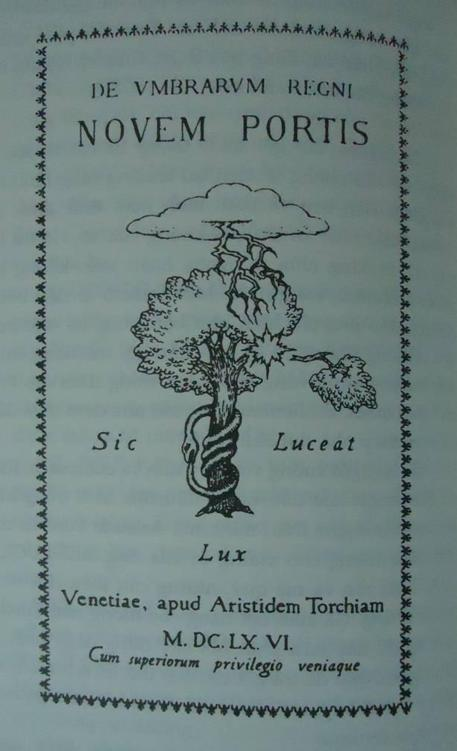
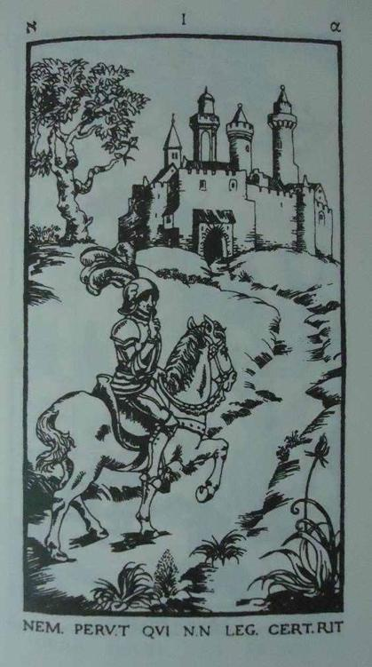
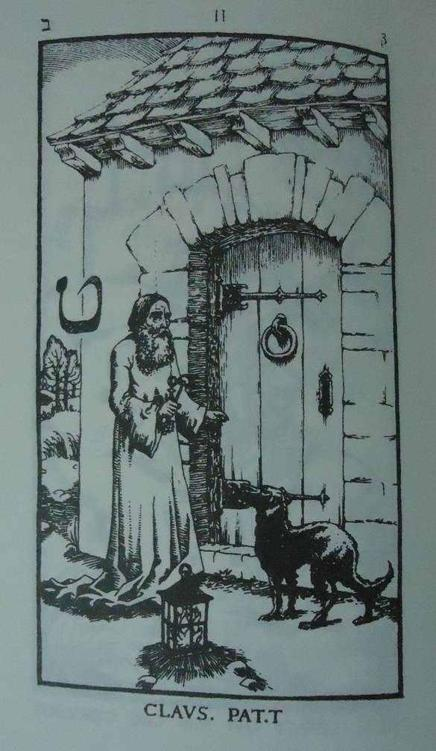
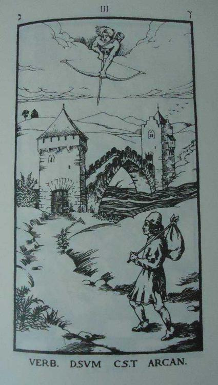
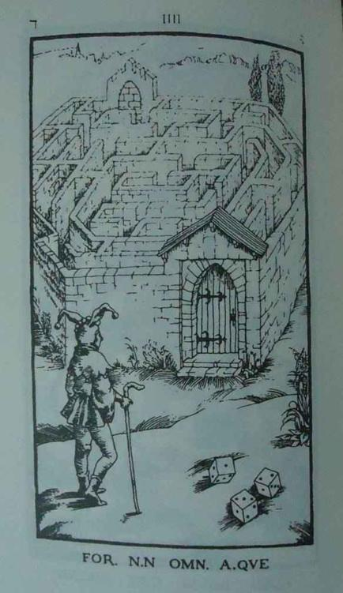
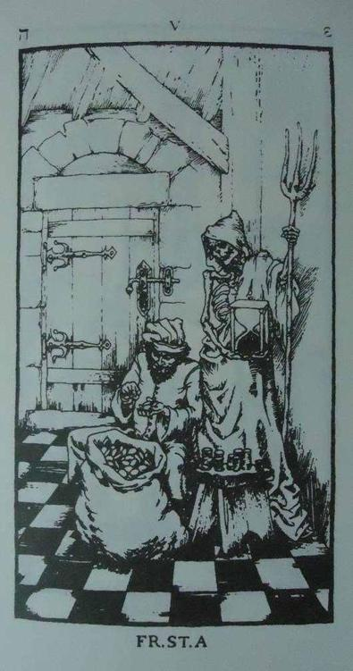
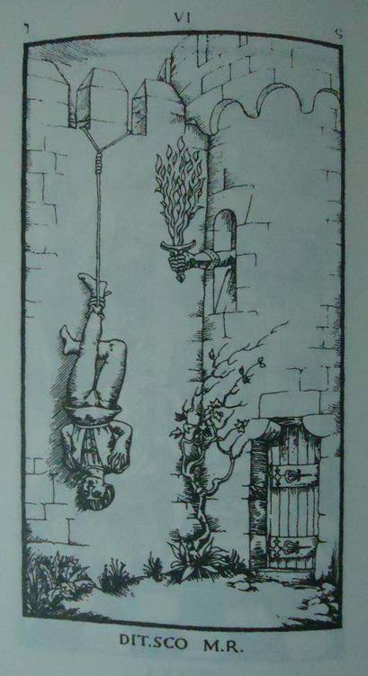
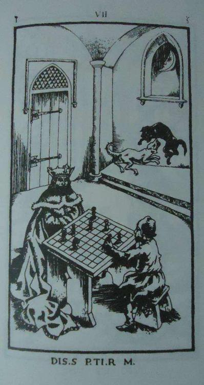
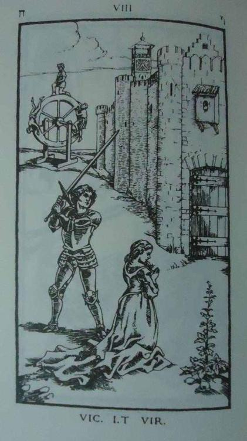
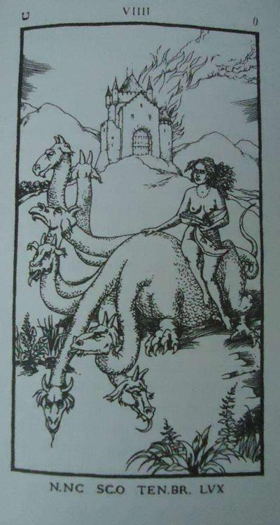
TIẾNG CHUÔNG ĐIỆN THOẠI LÀM GIÁN ĐOẠN SUY NGHĨ CỦA GÃ. Flavio La Ponte. Hắn muốn báo cho Corso là cùng với mấy cuốn sách (phải mua cả lô theo thỏa thuận), hắn kiếm được một bộ sưu tập vé xe điện châu Âu, chính xác là 5.775 cái, tất cả đều có số đọc xuôi và ngược giống nhau, được xếp theo từng quốc gia trong mấy cái hộp đựng giày. Hắn không nói đùa. Nhà sưu tầm vừa chết và gia đình muốn tống khứ chúng đi. Có thể Corso biết ai đó quan tâm. Tự nhiên thôi. La Ponte biết rằng việc sưu tập không mệt mỏi và đầy bệnh hoạn 5.775 chiếc vé có số đọc xuôi ngược như nhau là hoàn toàn vô nghĩa. Có ai mua một bộ sưu tập ngu ngốc như vậy? Có, Bảo tàng Giao thông ở London là một gợi ý hay… Người Anh và những thói ngông cuồng của họ… Liệu Corso có muốn làm vụ này không?
La Ponte cũng lo lắng về bản thảo của Dumas. Hắn nhận được hai cú điện thoại từ một người đàn ông và một người đàn bà, cả hai không chịu xưng tên, hỏi về Rượu vang Anjou. Lạ, bởi vì La Ponte không nói chuyện bản thảo với bất kỳ người nào và không định nói gì chừng nào chưa có được báo cáo của Corso. Corso thuật lại cuộc chuyện trò với Liana Taillefer và nói rằng gã đã cho ả biết danh tính người chủ mới của tập bản thảo.
“Ả biết cậu thường tới gặp ông chồng quá cố. À mà nhân tiện,” gã nhớ ra, “ả muốn có một bản copy tờ phiếu thu.”
Đầu bên kia đường dây La Ponte phì cười. Làm quái gì có phiếu thu. Taillefer bán nó cho hắn, có thế thôi. Nhưng nếu góa phụ duyên dáng muốn thảo luận về chuyện ấy, hắn nói thêm và cười dâm đãng, hắn rất sẵn lòng. Corso đề xuất khả năng trước khi chết Taillefer đã nói với ai đấy về tập bản thảo. La Ponte không nghĩ thế; Taillefer đã khăng khăng là vấn đề sẽ được giữ bí mật cho đến khi chính ông ta đưa ra một ám hiệu. Cuối cùng ông ta chẳng làm gì hết, trừ phi tự treo cổ dưới cái giá đèn là một ám hiêu.
“Đó là thứ ám hiệu rõ ràng nhất,” Corso nói.
La Ponte cười khành khạch đầy hằn học. Rồi hắn hỏi về chuyến viếng thăm Liana Taillefer của Corso. Sau khi đưa ra mấy nhận xét lếu láo, La Ponte nói từ biệt. Corso không kể gì về chuyện bất ngờ ở Toledo. Họ thỏa thuận hôm sau sẽ gặp nhau.
Sau khi gác máy, Corso trở lại với Chín cánh cửa. Nhưng đầu óc gã lại hướng tới thứ khác. Bản thảo của Dumas lôi cuốn sự chú ý của gã. Sau cùng gã để ý tới tập tài liệu có những tập giấy xanh và trắng. Khẽ xoa xoa cánh tay đau, gã tìm trên máy thư mục Dumas. Màn hình bắt đầu nhấp nháy. Gã dừng lại ở một file có tên Bio:
Dumas Davy de la Pailleterie, Alexandre. Sinh 24.7.1802. Mất 5.12.1870. Con của Thomas Alexandre Dumas, tướng lĩnh cộng hòa. Tác giả 257 tập tiểu thuyết, hồi ký và truyện các loại. 25 vở kịch. Là người da trắng lai đen theo bên cha. Dòng máu đen khiến ông có những nét ngoại lai. Ngoại hình: cao, cổ to, tóc xoăn, môi dày, chân dài, cường tráng. Tính cách: đầy sức sống, hay thay đổi, độc đoán, dối trá, không đáng tin cậy, bình dân. Có 27 người tình, 2 con chính thức và 4 con ngoài giá thú. Làm ra rất nhiều tiền nhưng phung phí vào tiệc tùng, du lịch, rượu quý và hoa. Toàn bộ tiền bạc kiếm được nhờ viết văn đều hết sạch do tiêu pha vô độ cho tình nhân, bạn hữu và những kẻ theo đóm ăn tàn tụ tập quanh lâu đài của ông ở Montecristo. Lánh khỏi Paris để tránh chủ nợ chứ không vì lý do chính trị, như Victor Hugo bạn ông. Bạn bè: Hugo, Lamartine, Michelet, Gérard de Nerval, Nodier, George Sand, Berlioz, Theosphile Gautier, Alfred de Vigny, vân vân. Kẻ thù: Balzac, Badère, vân vân.
Mấy cái này chẳng có ích gì cho gã. Gã cảm thấy như mình đang lần mò trong bóng tối mịt mù, xung quanh là vô số manh mối sai lạc hay vô dụng. Nhưng hắn phải có một mối liên kết đâu đó. Bằng bàn tay lành, gã gõ Dumas.nov:
Các tiểu thuyết của Alexander Dumas xuất hiện trên báo theo kỳ:
1831: Cảnh lịch sử (Revue des Deux Mondes). 1834: Jacque I và Jacque II (Journal des Enfants). 1835: Elizabeth xứ Bavaria (Dumont). 1836: Murat (La Presse). 1837: Pascal Bruno (La Presse), Chuyện một ca sĩ giọng tenor (Gazette Musicale). 1838: Bá tước Horatio (La Presse), Đêm của Nero (La Presse), The Arms Hall (Dumont), Đại úy Paul (Le Siècle).1839: Jaques Ortis (Dumont), Cuộc đời và những chuyến phiêu lưu của John Davys (Revue de Paris), Đại úy Panphile (Dumont). 1840: Kiếm sư (Revue de Paris). 1841: Kỵ sĩ d’Harmental (Le Siècle). 1843: Sylvandire (La Presse), Bộ quần áo cưới (La Mode), Albine (Revue de Paris), Ascanio (Le Siècle), Fernande (Revue de Paris), Amaury (La Presse). 1844: Ba người lính ngự lâm (Le Siècle), Gabriel Lambert (La Chronique), Con gái quan nhiếp chính (Le Commerce), Anh em xứ Corso (Démocratie Pacifique), Bá tước Monte Cristo (Journal des Débats). Nữ bá tước Bertha (Hetzel), Chuyện cái kẹp hạt dẻ (Hetzel), Hoàng hậu Margot (La Presse). 1845: Nanon (La Patrie), Hai mươi năm sau (Le Siècle), Hồng lâu kỵ sĩ (Démocratie Pacifique), Bà Monsoreau (Le Constitutionel), Madame de Conde (Le Patrie). 1846: Nữ Tử tước de Cambes (La Patrie), Anh em cùng cha khác mẹ (Le Commerce), Joseph Balsam (La Presse), Tu viện Pessac (La Patrie). 1847: Bốn mươi lăm (Le Constitutionel), Tử tước Bragelonne (Journal pour Tous 1848: Chuỗi hạt của hoàng hậu (La Presse). 1849: Hôn lễ của Cha Olifus (Le Constitutionel). 1850: Ý muốn của Thượng đế (Evènement), Hoa tuy líp đen (Le Siècle), Sứ giả hòa bình (Le Siècle), Thiên thần Pitou (La Presse). 1851: Olympe de Clèves (Le Siècle). 1852: Thượng đế và ác quỷ (Le Pays), Nữ Bá tước de Charny (Cadot), Isaac Laquedem (Le Constitutionel). 1853: Người chăn cừu ở Ashbourn (Le Pays), Catherine Blum (Le Pays). 1854: Cuộc đời và những cuộc phiêu lưu của Catherine-Charlotte (Le Mousquetaire), Tên kẻ cướp (Le Mousquetaire), Người Mohica ở Paris (Le Mousquetaire), Đại úy Richard (Le Siècle), Trang sách của Công tước Savoy (Le Constitutionel). 1856: Các bạn đồng hành của Jehu (Journal pour Tous). 1857: Vị vua Saxon cuối cùng (Le Monte-Cristo), Sói chúa (Le Siècle), Người bắn vịt trời (Cadot), Đen (Le Constitutionel). 1858: Bầy sói cái ở Machecoul (Journal pour Tous), Hồi ký một cảnh sát (Le Siècle), Cung điện băng (Le Monte-Cristo). 1859: Con tàu (Le Monte-Cristo), Ammalat-Beg (Moniteur Universel), Chuyện một hầm ngục và một căn nhà nhỏ (Revue Européenne), Một chuyện tình (Le Monte-Cristo). 1860: Ký ức của Horatio (Le Siècle), Cha La Ruine (Le Siècle), Hầu tước phu nhân Escoman (Le Constitutionel), Vị bác sĩ ở Java (Le Siècle), Jane (Le Siècle). 1861: Một đêm ở Florence (Levy-Hetzel). 1862: Người tình nguyện năm 92 (Le Monte-Cristo). 1863: Thánh Felice (La Presse). 1864: Hồi ký một người yêu mến (Avenir National), Bá tước Moret (Les Nouvelles). 1866: Một trường hợp về lương tâm(Le Soleil), Dân Paris và dân tỉnh lẻ (La Presse), Bá tước Mazarra (Le Mousquetaire). 1867: Trắng và xanh dương (Le Mousquetaire), Nỗi kinh hoàng Phổ (La Situation). 1869: Hector de Sainte-Hermine (Moniteuv Universel), Người thầy thuốc bí ẩn (Le Siècle), Con gái người Hầu tước (Le Siècle).
Gã mỉm cười tự hỏi không biết ngài Enrique Taillefer quá cố phải tốn bao nhiêu tiền để có được cả đống sách này. Mắt kính mờ tịt, gã liền gỡ kính ra cẩn thận lau. Những dòng chữ trên máy tính bây giờ nhòe đi, cũng như những hình ảnh kỳ lạ khác gã không thể nhìn ra được. Gã đeo kính vào, chữ nghĩa trên màn hình lại rõ nét, song những hình ảnh thì vẫn trôi loanh quanh mơ hồ trong đầu gã, và chẳng có mấu chốt nào hầu mang lại cho chúng bất cứ ý nghĩa gì. Tuy nhiên Corso cảm giác mình đã đi đúng hướng. Màn hình lại bắt đầu nhấp nháy:
Baudry, biên tập viên của Le Siècle, xuất bản Ba người lính ngự lâm trong khoảng từ 14 tháng Ba đến 11 tháng Bảy năm 1844.
Gã xem các file khác. Thông tin của gã về Dumas cho biết ông có hai mươi hai người cộng sự ở từng thời kỳ khác nhau trong đời viết văn của mình. Quan hệ với nhiều người trong số này kết thúc đầy sóng gió. Nhưng Corso chỉ quan tâm đến một cái tên:
Maquet, Auguste-Jules. 1813-1886. Hợp tác với Alexandre Dumas làm vài vở kịch và 19 tiểu thuyết, trong đó có những cuốn nổi tiếng nhất (Bá tước Monte Cristo, Hồng lâu kỵ sĩ, Hoa tuy líp đen, Chuỗi hạt của hoàng hậu) và đặc biệt là loạt truyện Lính ngự lâm. Sự cộng tác này mang lại cho ông danh tiếng và giàu có. Trong khi Dumas qua đời không xu dính túi thì Maquet chết trên đống tiền trong lâu đài của mình ở Saint-Mesme. Không có tác phẩm nào do tự ông viết mà không có sự đóng góp của Dumas còn tồn tại được đến ngày nay.
Gã xem bản ghi chú tiểu sử, có mấy dòng trích từ Hồi ký của Dumas:
Chúng tôi, Hugo, Balzac, Soulie, De Musset và tôi, những người sáng tác văn chương bình dân. Chúng tôi có được tiếng tăm, dù nhiều dù ít, chính là bằng cách viết như vậy, dù rằng nó bình dân…
Trí tưởng tượng của tôi phải đương đầu với thực tế, giống như một người tới thăm lại một tòa nhà cổ điêu tàn, phải bước qua đám phế thải ngổn ngang, lần theo các hành lang, cúi mình chui qua những ô cửa, để rồi dựng lại một bức tranh gần giống tòa nhà ban đầu khi nó còn tràn trề sức sống, với tiếng hát câu cười rộn rã, hoặc tiếng nức nở sầu đau vang vọng khắp nơi nơi.
Corso bực bội rời mắt khỏi màn hình. Gã đã đánh mất cảm giác, nó trốn vào đâu đó trong những ngóc ngách ký ức trước khi gã nhận diện được nó. Corso đứng lên đi đi lại lại trong căn phòng tối. Rồi gã cầm nghiêng cái đèn soi lên chồng sách trên sàn ở sát tường. Gã nhặt lên hai tập sách dày: một bản in hiện đại cuốn Hồi ký của Alexandre Dumas bố. Trở lại bàn làm việc, gã giở nhanh quyển sách cho tới khi bắt gặp ba tấm ảnh. Trong tấm ảnh đầu tiên, Dumas ngồi bên Isabelle Constant, người tình của nhà văn từ khi nàng mới mười lăm tuổi, điều này được chú thích rõ trong mục lục. Mái tóc xoăn và nước da ngăm đen để lộ dòng máu châu Phi của Dumas. Trong tấm ảnh thứ hai Dumas già hơn, chụp cùng con gái Marie. Lúc này, đang ở đỉnh cao danh vọng, cha đẻ của loạt tiểu thuyết phiêu lưu ngồi hiền lành và yên lặng trước ống kính. Tấm ảnh thứ ba vui tươi và nhiều ý nghĩa nhất, Corso thầm nghĩ. Dumas ở tuổi sáu mươi lăm, tóc đã ngả màu xám nhưng thân thể vẫn to lớn và mạnh mẽ, tấm áo choàng dài hé mở để lộ cái bụng phệ, đang ôm Adah Menken, một trong những người tình cuối cùng của ông. Trong sách có chú thích: “Sau những buổi gọi hồn bằng ma thuật mà nàng vốn rất say mê, nàng thích được chụp ảnh trong bộ quần áo chẽn, cùng với người đàn ông vĩ đại của đời nàng.” Trong ảnh, chân, tay và cổ của nàng Menken để trần, đương thời đó là chuyện gây tai tiếng. Thiếu phụ ngả đầu lên bờ vai cường tráng của Dumas, nhưng lại chú ý
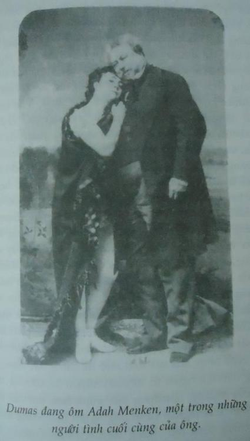
nhiều đến ống kính hơn là thứ nàng ôm trong tay. Nét mặt Dumas hằn lên dấu ấn của cả một cuộc đời dài đầy đam mê khoái lạc, với những cuộc chơi trác táng và tiệc tùng liên miên. Hai má phù nề, dấu hiệu một đời phóng túng, ông mỉm cười thỏa mãn và giễu cợt. Ánh mắt ranh mãnh và khiêu khích như muốn tìm kiếm sự đồng lõa từ người thợ ảnh. Ông già to béo cùng người con gái trẻ mất nết và say đắm muốn trưng ông ta như một thứ chiến lợi phẩm hiếm hoi: đây, con người mà danh tiếng và tài kể chuyện đã đi vào giấc mơ của bao người đàn bà. Như thể ông già Dumas cần được đồng cảm, khi nhượng bộ ý thích đồng bóng muốn chụp ảnh của người tình. Nói cho cùng thì nàng trẻ và xinh, da nàng mịn và đôi môi nồng nàn, người con gái mà đời dành cho ông trong ba năm cuối đời ông. Lão quỷ già.
Corso gấp cuốn sách lại và ngáp. Đồng hồ của gã, loại đồng hồ bấm giờ gã thường quên không lên giây, đã dừng lại ở không giờ mười lăm phút. Gã đi tới mở cửa sổ, hít thở làn khí đêm lạnh lẽo. Đường phố vẫn vắng ngắt.
Tất cả đều rất kỳ lạ, gã nghĩ khi quay lại bàn làm việc tắt máy tính. Mắt gã dừng lại ở cái cặp chứa tập bản thảo viết tay. Một cách máy móc gã giở nó ra xem, mười lăm trang viết đầy hai thứ chữ khác nhau, mười một trang giấy màu xanh, bốn trang giấy trắng. Après de nouvelles Presque désespérées du roi… Sau những tin tức hầu như tuyệt vọng từ phía nhà vua… Trong đống sách trên sàn gã tìm được một tập sách to tướng màu đỏ, một bản facsimile[2] năm 1988 của J.C. Lattes chứa toàn tập Lính ngự lâm và Bá tước Monte Cristo dựa theo bản của Le Vasseur có tranh khắc ấn hành sau khi Dumas chết không lâu. Gã tìm chương Rượu vang Anjoy ở trang 144 rồi bắt đầu đọc, so sánh nó với bản thảo gốc. Ngoài mấy sai sót nhỏ đây đó, còn thì lời văn giống hệt nhau. Trong sách, ở chương này có hai trang minh họa do Maurice Leloir vẽ và Huyot làm bản khắc. Vua Louis XIII dẫn mười ngàn quân tham gia trận bao vây La Rochelle, bốn kỵ sĩ dẫn đầu đội ngự lâm quân của nhà vua, mang súng hỏa mai, đội mũ rộng vành và mặc áo choàng của đại đội de Treville. Ba người trong đó hẳn phải là Athos, Porthos và Aramis. Ngay sau đó họ sẽ gặp bạn hữu d’Artagnan lúc đó mới chỉ là một học viên sĩ quan quèn trong đại đội vệ binh của ngài Essarts. Chàng trai xứ Gascon còn chưa biết rằng những chai rượu vang Anjou, quà tặng từ kẻ tử thù Milady của chàng, mật vụ của Richelieu, đã bị bỏ thuốc độc. Ả muốn rửa nỗi nhục do d’Artagnan gây ra cho mình. Chàng đã mạo nhận là Công tước Wardes lẻn vào giường ả để vui vẻ một đêm với người tình lẽ ra thuộc về Công tước. Tệ hơn nữa là d’Artagnan còn phát hiện bí mật khủng khiếp của Milady, hình hoa huệ trên vai, dấu hiệu nhục nhã mà đao phủ đã dùng sắt nung đỏ đóng dấu lên người ả. Với bấy nhiêu ân oán và tính khí của Milady, nội dung bức minh họa thứ hai thật dễ đoán: d’Artagnan và những người bạn trung thành của chàng kinh hãi chứng kiến tên hầu Furreau thở hắt ra trong đau đớn cùng cực khi uống thứ rượu vang lẽ ra dành cho chủ hắn. Bị kích động bởi ma lực của lời văn hai mươi năm không đọc tới, Corso tìm tới đoạn mấy chàng ngự lâm và d’Artagnan trò chuyện về Milady:
“Là vậy đấy,” d’Artagnan bảo Athos. “Như anh thấy, đây là một cuộc đấu sống còn, bạn thân mến ạ.”
Athos gật đầu. “Phải. Phải,” chàng nói. “Tôi thấy rõ lắm. Nhưng cậu tin đúng là ả không?”
“Tôi tin chắc.”
“Thế mà thú thực với cậu tôi còn ngờ đấy.”
“Còn bông huệ trên vai ả thì sao?”
“Đó chắc là một ả người Anh mắc tội ở Pháp, và người ta đánh dấu tội phạm đó bằng dấu sắt nung.”
“Athos, quả thật đấy là vợ anh,” d’Artagnan nhắc lại. “Anh không nhớ hai cái dấu ấy giống nhau đến thế nào ư?”
“Thế nhưng tôi vẫn tin ả chết rồi, tôi đã treo cổ ả rất cẩn thận mà.”
Đến lượt d’Artagnan lắc đầu.
“Thế tóm lại phải làm gì?” chàng trai trẻ hỏi.
“Nhất định chúng ta không thể để một thanh gươm treo mãi trên đầu như thế,” Athos nói. “Phải thoát khỏi tình cảnh này.”
“Nhưng thoát thế nào?”
“Nghe đây, tìm cách gặp lại mà giải thích mọi chuyện. Nói với ả: ‘Hòa hay là chiến! Ta lấy danh dự một quý tộc thề rằng sẽ không bao giờ nói hay làm gì chống lại nàng. Về phía nàng, hãy trịnh trọng thề sẽ tránh xa ta. Nếu không ta sẽ tìm Quan Chưởng ấn, tìm đến tận Đức Vua, ta sẽ tìm đao phủ, sẽ kích động triều đình chống lại nàng, ta sẽ tố cáo nàng đã bị đóng dấu sắt nung, sẽ đưa nàng ra tòa, và nếu người ta tha tội cho nàng, thì ta thề với danh dự của một nhà quý tộc rằng ra sẽ giết nàng, giết nàng ở bất kỳ xó xỉnh nào như giết một con chó dại.”
“Tôi cũng khoái cách ấy,” d’Artagnan nói.
Ký ức từng đoạn theo nhau tuôn ra. Corso gắng sức nắm bắt hình ảnh quen thuộc lướt qua trong đầu, tìm cách chộp lấy trước khi nó biến mất, và một lần nữa thấy hiện lên hình dáng người đàn ông mặc com lê đen, người lái chiếc Jaguar đậu bên ngoài nhà Liana Taillefer, lái chiếc Mercedes ở Toledo… Người mặt sẹo. Và chính Milady là người khuấy động mẩu ký ức đó.
Gã nghĩ về điều đó, cảm thấy bối rối. Bỗng nhiên bức tranh trở nên rõ nét. Milady, tất nhiên rồi. Milady de Winter, khi d’Artagnan trông thấy ả lần đầu tiên trong cửa sổ xe ngựa qua chương đầu cuốn tiểu thuyết, bên ngoài quán rượu ở Meung. Milady trò chuyện với một người lạ. Corso giở nhanh các trang sách tìm đoạn đó. Gã dễ dàng tìm ra nó:
Một người đàn ông tuổi chừng bốn mươi tới bốn lăm, mắt đen sắc sảo, da trắng nhợt, cái mũi rất cao và bộ ria đen xén tỉa hoàn hảo…
Rochefort. Tên mật vụ nham hiểm của Hồng y giáo chủ và kẻ thù của d’Artagnan, người đã khiến chàng ăn đòn oan trong chương đầu, kẻ trộm bức thư tiến cử của ông de Treville và gián tiếp chịu trách nhiệm về trận quyết đấu suýt xảy ra giữa chàng trai xứ Gascon với Athos, Porthos và Aramis… Bị cuốn theo những hồi ức lộn xộn của mình, Corso gãi đầu, bối rối trước mối quan hệ bất thường giữa các ý tưởng và nhân vật. Liên hệ giữa đồng đảng của Milady với cha tài xế định cho xe cán bẹp mình ở Toledo là thế nào? Rồi còn cái sẹo? Đoạn văn đó không nhắc gì đến cái sẹo, nhưng gã nhớ rõ Rochefort vẫn có một vết gì đấy trên mặt. Gã nhớ tiếp một số trang và tìm thấy nơi khẳng định điều này ở chương 3, đoạn d’Artagnan thuật lại chuyến phiêu lưu của mình cho ông de Treville nghe:
“Hãy cho ta biết,” ông lặp lại, “cái ông quý tộc ấy có vết sẹo mờ trên thái dương, đúng không?”
“Đúng vậy, cái vết đó hẳn là do một viên đạn sượt qua…”
Một vết sẹo mờ trên thái dương. De Treville đã khẳng định như thế, nhưng Corso vẫn nhớ, vết sẹo của Rochefort lớn hơn, không ở bên thái dương mà trên má, giống như gã lái xe mặc đồ đen. Corso soát lại tỉ mỉ tất cả, cuối cùng gã phá lên cười. Giờ thì cả bức tranh đã hoàn chỉnh với đủ mọi sắc màu: Lana Turner, bên cửa sổ xe ngựa trong phim Ba người lính ngự lâm, cạnh đó thằng cha Rochefort xảo quyệt rất chi hợp cách, da đen chứ không nhợt nhạt như trong truyện của Dumas, đội mũ cắm lông chim, và có vết sẹo dài – lần này thì rõ ràng – cắt từ trên xuống dưới má phải. Gã đã nhớ chi tiết ở trong phim chứ không phải trong tiểu thuyết, điều này khiến gã vừa bực vừa buồn cười. Hollywood chết tiệt.
Dẹp những cảnh phim qua một bên, cuối cùng gã thấy được một trật tự nào đó. Có một sợi chỉ chung dù ẩn mật xuyên suốt toàn bộ, thứ gì đấy giống như một giai điệu với những nốt nhạc thăng trầm huyền bí. Sau khi chịu đựng bấy nhiêu lo lắng mơ hồ từ lần thăm bà góa Taillefer, bây giờ gã đã lờ mờ nhìn ra những nét đại khái, những khuôn mặt, bầu không khí và các nhân vật, nằm chơi vơi giữa thực tại và hư cấu, tất cả liên kết với nhau bằng một cách thức lạ lùng, đến giờ vẫn còn chưa sáng tỏ. Dumas và cuốn sách thế kỷ mười bảy. Con quỷ và Ba người lính ngự lâm. Milady và giàn hỏa thiêu của Tòa án Dị giáo… Dù rằng tất cả những thứ đó vô lý hơn là rõ ràng, giống như trong tiểu thuyết hơn là ngoài đời.
Gã tắt đèn rồi lên giường nằm. Nhưng mãi mới ngủ được, có một hình ảnh cứ lờn vờn trong đầu, cứ lửng lơ trong bóng tối cho đến khi gã mở mắt. Một cảnh xa xăm, cảnh gã đọc sách khi còn bé, đầy những hình bóng lại hiện về sau hai mươi năm, hóa hình thành những hồn ma ở gần sát đến nỗi gã hầu như có thể sờ được chúng. Vết sẹo. Rochefort. Người đàn ông ở Meung. Tay sai của giáo chủ.
-----------------------
[1] Khổ sách chiều cao 17,5-20 cm; 15-17 cm.
[2] facsimile: bản sao hoặc bản tái chế sách, bản đồ, tranh, bản thảo viết tay cổ có giá trị với độ chính xác cao nhất có thể kể cả về màu sắc, kích cỡ, hay chất liệu…